Getting Started
Prerequisites
Make sure you have these accounts and tools ready before starting setup.
Required Accounts & Services
WordPress community plugin — powers the feed, spaces, profiles, and all backend content. Must be installed on your WordPress site.
Walkthrough: Install Fluent Community on your WordPress site
- Go to your WordPress admin → Plugins → Add New.
- Search for "FluentCommunity" and click Install Now, then Activate.
- If you need Pro features (messaging, courses), purchase a license at fluentcommunity.co and activate it under FluentCommunity → Settings → License.
- Once activated, visit FluentCommunity → Settings to configure your community name, spaces, and initial settings.
Cloud build service (EAS) for compiling iOS and Android binaries. Also handles push notification tokens.
Walkthrough: Create an Expo account
- Go to expo.dev/signup and create a free account (email + password).
- Choose the Free plan — 30 builds/month is more than enough for setup and ongoing updates.
- Remember your credentials — you'll use them to log in to EAS later.
Already have an Expo account? You're good — skip ahead.
Required to submit to the iOS App Store and sign builds.
Walkthrough: Enroll in the Apple Developer Program
- Go to developer.apple.com/programs/enroll and sign in with your Apple ID (or create one).
- Follow the enrollment steps. You'll need to agree to the Apple Developer Agreement and pay the $99/year fee.
- Enrollment can take up to 48 hours to process, so do this early.
Walkthrough: Create your app in App Store Connect
- Go to appstoreconnect.apple.com/apps and sign in with your Apple Developer account.
-
Click the blue + button next to "Apps", then select New App (not App Clip or App Bundle).
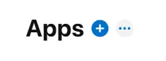
-
Fill in the New App form:
- Platforms — check iOS
- Name — your app's display name on the App Store (you can change this later)
- Primary Language — your app's main language
- Bundle ID — select the bundle ID you registered in the Apple Developer Portal (from the App Identity card). If you haven't registered one yet, do that first and come back here.
- SKU — an internal reference ID (not visible to users). Use something like your app slug, e.g.
mycommunityapp - User Access — select Full Access unless you have specific team restrictions
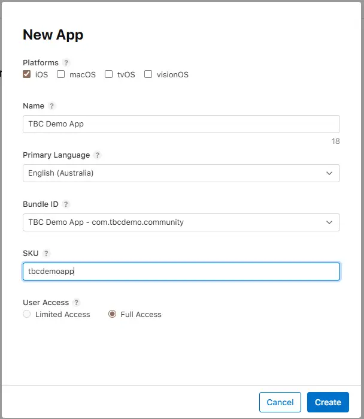
- Click Create. Your app now exists in App Store Connect. You'll need the App Store Connect ID later (found under General → App Information → Apple ID).
Required to submit to the Google Play Store.
Walkthrough: Register a Google Play Developer account
- Go to play.google.com/console/signup and sign in with your Google account.
- Accept the Developer Distribution Agreement and pay the $25 one-time registration fee.
- Complete your developer profile (name, address, contact info). Google may take a few days to verify your identity.
Walkthrough: Create your app in Google Play Console
- Go to play.google.com/console and sign in with your Google Play Developer account.
- Click Create app on the All Apps page.
-
Fill in the basics:
- App name — your app's display name on the Play Store
- Default language — your app's main language
- App or Game — select App
- Free or Paid — select Free (this cannot be changed later)
- Check the Developer Program Policies and US export laws declarations, then click Create app.
- Your app now exists in the Play Console. The package name gets locked when you upload your first build — make sure it matches the Android Package you set in the App Identity card.
Optional Services
These are only needed if you use the features they power. The app works fine without them.
Push notifications — alerts users about new posts, replies, chat messages. Skip if you disable Push Notifications in wp-admin → TBC Community App → Features.
Don't have a Firebase account yet?
- Go to console.firebase.google.com and sign in with your Google account (or create one).
- Firebase is free on the Spark plan — no billing setup needed. The app only uses Firebase Cloud Messaging for push notifications.
Once you have an account, the Push Notifications step in the setup guide walks you through creating a project and downloading the config files.
Real-time updates — live message delivery, typing indicators, instant feed updates. Only needed if using Pusher Cloud as your socket provider. Skip if using Fluent Socket (built-in) or Soketi.
Walkthrough: Create a Pusher Channels app
- Go to dashboard.pusher.com/accounts/sign_up and create a free account.
- In the Pusher dashboard, click Channels → Create app.
- Give it a name and select a cluster closest to your server location.
- Copy the app_id, key, secret, and cluster values.
- In your WordPress admin, go to FluentCommunity → Settings → Features and configure the Pusher/socket settings with these values.
OTP phone verification during registration — sends a code to verify the user's phone number. Skip if you don't need phone verification (the field simply won't appear).
Walkthrough: Set up Twilio for phone verification
- Go to twilio.com/try-twilio and create a free account.
- In the Twilio Console, note your Account SID and Auth Token from the dashboard.
- Go to Messaging → Services and create a new Messaging Service (or use the default).
- In your WordPress admin, go to the tbc-otp plugin settings and enter your Twilio Account SID, Auth Token, and phone number or Messaging Service SID. (Requires the
tbc-otpadd-on plugin.)
Development Tools
Install these before starting setup. All are free.
JavaScript runtime that powers the app's tooling, Metro bundler, and dashboard. npm comes bundled with it.
Walkthrough: Install Node.js
- Go to nodejs.org and download the LTS version (18+).
- Run the installer with default settings. This installs both Node.js and npm.
- Verify: open a terminal and run
node -vandnpm -v. Both should print version numbers.
Command-line tool for building and submitting your app via Expo's cloud service. Requires Node.js.
Walkthrough: Install EAS CLI
The setup dashboard handles this automatically — in the Build Service card, it detects whether EAS CLI is installed and lets you install, log in, and link your project with one click each.
npm install -g eas-cli then eas login from your terminal.
Version control — needed for EAS builds and tracking your config changes.
Walkthrough: Install Git
- Go to git-scm.com/downloads and download for your OS.
- Run the installer with default settings.
- Verify: open a terminal and run
git --version.
Recommended editor — our dashboard and docs are built around it. Built-in terminal makes running commands easy.
Walkthrough: Install VS Code
- Go to code.visualstudio.com and download for your OS.
- Install and open it. Go to File → Open Folder and select your project folder.
- Open the built-in terminal: Terminal → New Terminal (or
Ctrl+`).
AI assistant that understands your entire project. Helps with setup, config, building modules, and debugging. Free tier is plenty.
Walkthrough: Install Claude Code
- Open VS Code and go to the Extensions sidebar (
Ctrl+Shift+X). - Search for "Claude Code" by Anthropic and click Install.
- Sign in with a free Claude account when prompted.
- Open the Claude Code panel — it automatically reads your project's
CLAUDE.mdand understands the full codebase.
CLAUDE.md file that teaches Claude your entire project, so it can help right out of the box.
Set Up Your Project
After purchasing, you'll receive a .tar.gz archive (e.g. core-update-3.1.0.tar.gz). Extract it to a folder on your computer and name it after your community — something like MyCommunityApp or FitnessTribeApp. This is your project root.
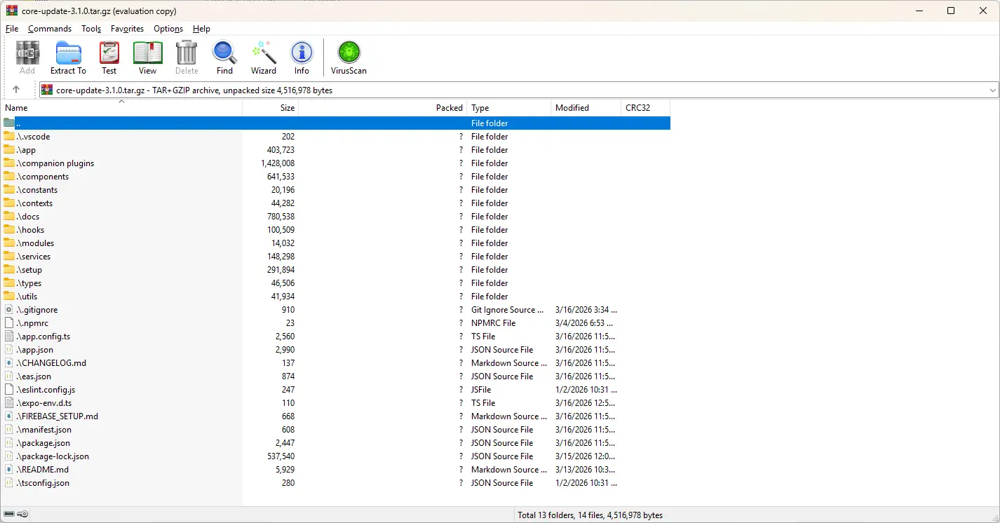
Open VS Code, go to File → Open Folder, and select your project folder. Open the built-in terminal (Terminal → New Terminal or Ctrl+`).
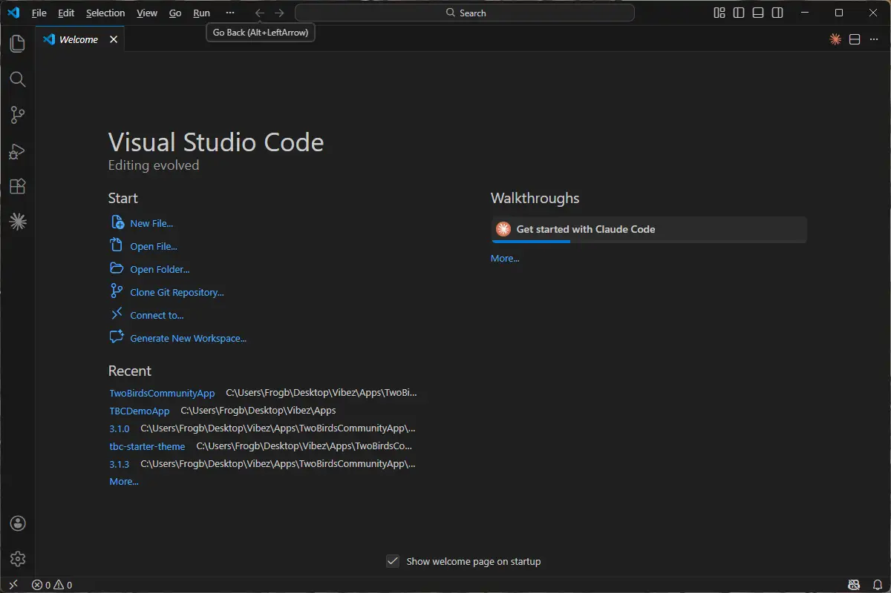
If you installed the Claude Code extension, open it from the sidebar. It reads your project's CLAUDE.md and understands the full codebase — ask it to help with setup, build modules, or debug issues.
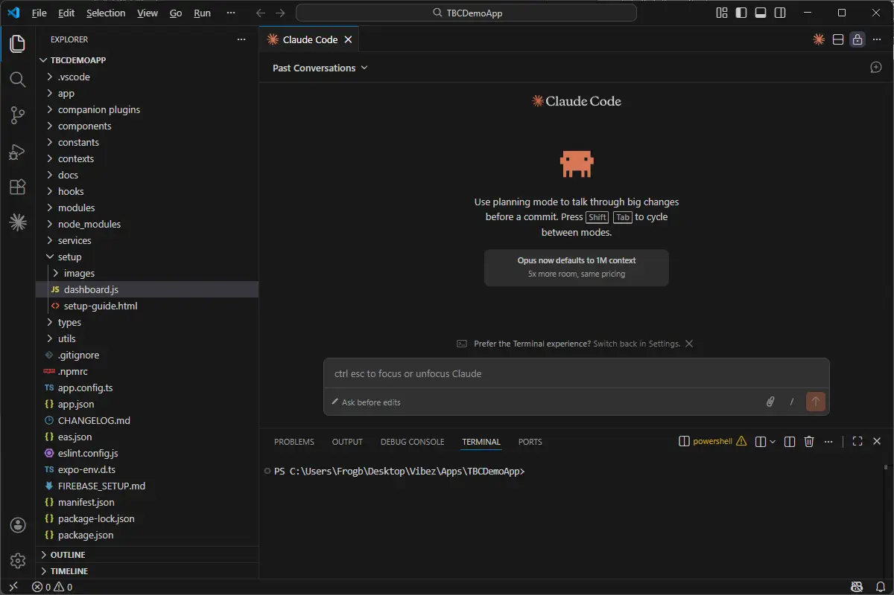
If you're using Claude Code, just ask it to "launch the dashboard". Otherwise, open a terminal in your project folder and run:
npm run dashboardThe dashboard opens http://localhost:3456 in your browser — your setup command center. It reads your actual config files, lets you edit everything in a browser UI, and validates your setup live. Work through each tab from left to right.
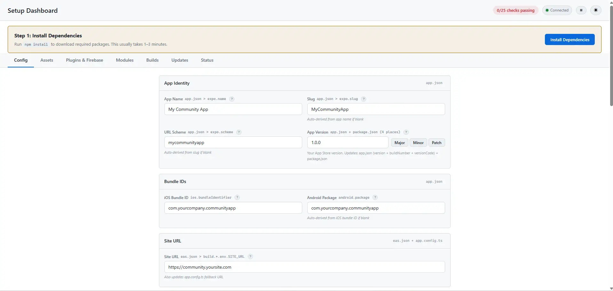
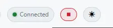
in the header, or pressCtrl+C in the terminal.
If node_modules is missing, the dashboard shows a yellow banner with an Install Dependencies button. Click it — this runs npm install for you. Once complete, the banner disappears and you're ready to configure.
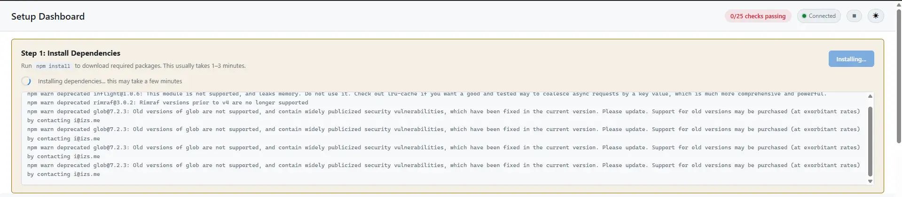
Config Tab
The Config tab is where you make the app yours. Work through each card top to bottom, then hit Save Changes — everything gets written to the right files automatically.
The App Identity card is where you name your app and set the identifiers the app stores use to find it. You only need to fill in two fields — everything else auto-derives from your app name.

App Name
Type your app name — this is what users see on their home screen and in stores (keep it under 30 characters). The dashboard auto-derives Slug, URL Scheme, APP_NAME, APP_USER_AGENT, and Package Name from it.
iOS Bundle ID
A reverse-domain identifier (e.g. com.yourcompany.community) that uniquely identifies your app in the App Store. Cannot be changed after your first submission — choose carefully. You need to register this in the Apple Developer Portal before building:
Register your Bundle ID in Apple Developer Portal
- Go to Certificates, Identifiers & Profiles → Identifiers
- Click the blue + button
- Select App IDs → Continue → Select App → Continue
- Enter a Description and your Bundle ID (Explicit, not Wildcard — must match the dashboard exactly)
- Under Capabilities, enable Push Notifications
- Click Continue → Register


Other fields (auto-derived, no action needed)
| Slug | URL-safe project ID for Expo. Auto-derived from app name. |
| URL Scheme | Deep link prefix (e.g. mycommunityapp://) for push notification taps and external links. Auto-derived from slug. Copy into wp-admin → TBC Community App → Deep Linking. |
| App Version | Starts at 1.0.0. Bump from the Builds tab — writes to all 4 required places at once. The core version in the header is separate (tracks product version). |
| Android Package | Auto-fills from iOS Bundle ID. Same ID on both platforms is recommended for Firebase. Override manually if needed. |
| APP_NAME | App name in code (header, notifications). Auto-synced with App Name above. |
| APP_USER_AGENT | Identifies your app in API requests to WordPress. Auto-derived from app name. |
| Package Name | npm package name in package.json. Not user-visible — auto-derived from slug. |
Point your app at the WordPress site it connects to. You only need the Production URL — staging is optional.

| Production URL | Your live WordPress + Fluent Community site URL (no trailing slash). The app uses this for everything — login, feed, profiles, messaging. Must have the tbc-community-app companion plugin installed. |
| Staging URL | Optional. If you have a test site, enter it here and run npm run dev:staging to develop against it instead of production. The app shows a red STAGING label in the header so you always know which environment you're on. Leave empty if you don't have one. |
Requires: Expo
EAS (Expo Application Services) is the cloud build service that compiles your app for iOS and Android — no Xcode or Android Studio needed. The dashboard walks you through the entire setup: install, login, and project linking.

Setup walkthrough: Install → Login → Link
1. Install EAS CLI
The dashboard auto-detects EAS CLI. If missing, you'll see a red dot — click Install EAS CLI and the dashboard runs npm install -g eas-cli for you. Or install manually: npm install -g eas-cli
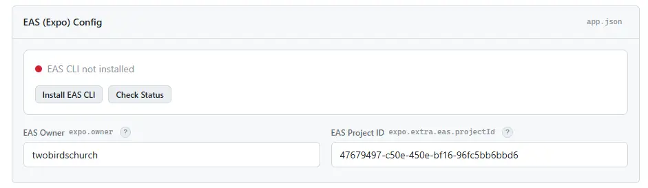
2. Log in to EAS
Once installed, click Log In to EAS — this opens your browser to sign in. If you don't have an Expo account, create one for free first. The dashboard detects login automatically.
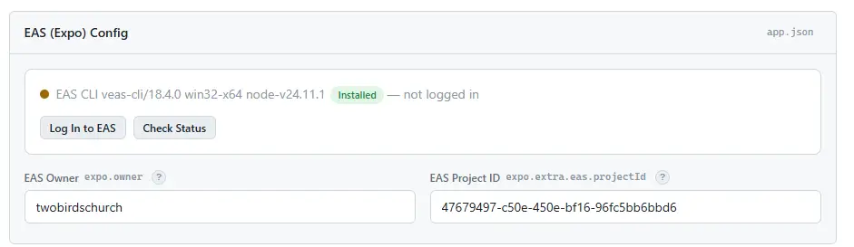
3. Link your project
After login, click Link Project to create a project on your Expo account. This auto-fills EAS Owner and EAS Project ID. If a project with the same slug already exists, it links to that one instead. Set your app name first (in the App Identity card) before linking.
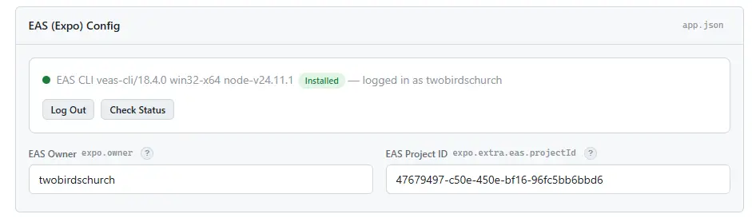
| EAS Owner | Your Expo account username. Auto-fills when you log in and link your project. |
| EAS Project ID | UUID that identifies your project on EAS. Auto-fills when you link your project. |
These fields let eas submit automatically upload builds to the App Store and Google Play. You don't need them for building — only when you're ready to submit. Skip this and come back later if you prefer.

iOS
| Apple Account (Email) | The email you sign into App Store Connect with. Find it under your name → Settings → Apple Account. |
| App Store Connect ID | Numeric ID Apple assigns to your app. Find it in App Store Connect → your app → General → App Information → the field labeled Apple ID (e.g. 1563113528). |
Haven't created your app in App Store Connect yet?
- Log into App Store Connect → Apps
- Click + → New App
- Fill in your app name, select the Bundle ID you registered in the App Identity card, and enter a SKU
- Click Create — then find the App Store Connect ID under General → App Information → Apple ID
EXPO_APPLE_APP_SPECIFIC_PASSWORD as an environment variable.
Android
| Track | Which Play Store track to submit to — internal for testing, production for release. |
| Service Account Key | A JSON key file from Google Cloud that authorizes automated uploads. Drop the file into the upload area in the dashboard. |
Requires: Firebase
Push notifications require a Firebase project with two config files — one for Android and one for iOS. The dashboard shows a red indicator for each missing file and a green checkmark once uploaded.

1. Create a Firebase project
- Go to console.firebase.google.com and sign in with your Google account.
- Click Create a project (or Add project).
- Enter a project name — use your app name (e.g. “My Community App”). Firebase will generate a project ID below the name field automatically.
- On the Google Analytics step, disable the toggle. The app only uses Firebase for push notifications — Analytics is not needed and adds unnecessary complexity.
- Click Create project and wait for it to finish provisioning.

2. Add the Android app
- From your Firebase project dashboard, click Add app and select the Android icon.
- For Android package name, enter the same package name you set in the App Identity card (e.g.
com.company.appname). This must match exactly. - For App nickname, enter your app name followed by “Android” (e.g. “My Community App Android”). This helps you tell the two apps apart in Firebase later.
- Click Register app.
- On the next step (Download and then add config file), click Download google-services.json. Save this file somewhere you can find it.
- Click Next to skip through the remaining steps (Add Firebase SDK and Next steps), then click Continue to console. The app already has the Firebase SDK built in — you do not need to edit any Gradle files or add any code.

3. Add the iOS app
- Back on the project dashboard, click Add app again and select the iOS icon.
- For Apple bundle ID, enter your iOS bundle identifier from the App Identity card (e.g.
com.company.appname). This must match exactly. - For App nickname, enter your app name followed by “iOS” (e.g. “My Community App iOS”).
- For App Store ID, enter your numeric Apple ID if you already have one — it’s the same App Store Connect ID from the previous step. Find it in App Store Connect → your app → General → App Information → Apple ID. If you haven’t created your app in App Store Connect yet, leave this blank — you can add it later.
- Click Register app.
- On the next step, click Download GoogleService-Info.plist. Save this file.
- Click Next to skip through the remaining steps, then click Continue to console. Same as Android — the SDK is already built into the app.

4. Upload to the dashboard
- Back in the setup dashboard, find the Push Notifications card.
- Drag and drop
google-services.jsoninto the Android upload area. The indicator will turn green with a checkmark. - Drag and drop
GoogleService-Info.plistinto the iOS upload area. The indicator will turn green with a checkmark.
5. Enable Cloud Messaging
- In the Firebase console, go to Project Settings (gear icon) → Cloud Messaging tab.
- Make sure Firebase Cloud Messaging API (V1) is enabled. If it shows “Disabled”, click the three-dot menu and enable it.
google-services.json (Android) and GoogleService-Info.plist (iOS) for push notifications to work on both platforms.
app.json, eas.json, app.config.ts, constants/config.ts, package.json) in one go.
Assets Tab
Replace these files in assets/images/:
| File | Purpose | Notes |
|---|---|---|
app_icon_ios.png | iOS app icon | 1024x1024, no transparency |
app_icon_android_adaptive_fg.png | Android adaptive icon foreground | Must work with adaptiveIcon.backgroundColor in app.json. Also used as Play Store listing icon. |
app_icon_android_adaptive_bg.png | Android adaptive icon background | Optional — use solid color in app.json instead |
app_icon_android_notification.png | Android notification icon | Monochrome, transparent background |
splash_screen_img.png | Splash screen logo | Centered on splash backgroundColor |
login_background_img.png | Login screen background | Full-screen background image |
login_logo.png | Login screen logo (fallback) | Overridden by server-synced logo if available |
login_logo.png is a fallback for first launch before server branding is cached.
Companion Plugins
WordPress plugins that power the app's backend. Located in the companion plugins/ folder.
Installing Plugins
- In the
companion plugins/folder, find the plugin folder you need - Zip the folder (e.g. create
tbc-community-app.zip) - In WordPress admin: Plugins → Add New → Upload Plugin → select the
.zip→ Install Now → Activate - Repeat for each plugin
tbc-community-app first — other plugins depend on it.
Recommended order: tbc-community-app → tbc-multi-reactions → any add-on plugins (tbc-otp, tbc-profile-completion, etc.).
Required Plugins Must Install
These ship with the product and are required for the app to function.
| Plugin | Purpose | WordPress Dependencies |
|---|---|---|
tbc-community-app |
Main bridge plugin. All custom REST endpoints (auth, registration, push notifications, config, branding, theme sync, etc.). Supports Fluent Community's native custom profile fields. | Fluent Community (free or Pro) |
tbc-multi-reactions |
Multi-reaction system — emoji reactions on posts and comments | Fluent Community |
Add-on Modules & Companion Plugins Sold Separately
Each add-on is a paired module + plugin: the app module lives in modules/, and its companion WordPress plugin lives in companion plugins/. Both are required for the feature to work. Purchased separately — not included in the base product.
| Plugin | Module | WordPress Dependencies | Purpose |
|---|---|---|---|
tbc-otp |
otpModule |
Twilio account | Phone OTP verification via SMS/voice during registration. Adds a verification step to the signup wizard. |
tbc-profile-completion |
profileCompletionModule |
None | Profile completion gate. Blocks app access until bio and/or avatar are completed after registration. |
tbc-book-club |
bookclubModule |
None | Audiobook player with chapters, progress tracking, bookmarks, and meeting schedules. Includes persistent mini-player above the tab bar. |
tbc-youtube |
youtubeModule |
None (YouTube Data API v3 key required) | YouTube channel integration with server-side caching. Shows latest videos on the home screen. |
Core WordPress Requirements
Features that depend on WordPress plugins or third-party services:
| Feature | Requires |
|---|---|
| Community (feed, spaces, profiles) | Fluent Community (free) |
| Direct messaging | Fluent Community Pro + Fluent Messaging add-on |
| Courses | Fluent Community Pro + LMS add-on |
| Cart / E-commerce | WooCommerce + tbc-cart companion plugin + cart module in modules/_registry.ts |
| Blog | WordPress posts (built-in, uses standard WP REST API) |
| Push notifications | Firebase project + tbc-community-app (see Firebase Setup) |
| Real-time updates | Fluent Messaging add-on — supports Pusher Cloud, Fluent Socket, or custom Soketi (configured in WordPress admin, app reads config automatically) |
| OTP verification | Twilio account — configured in tbc-otp plugin settings. Requires the tbc-otp add-on (sold separately). |
Module System
Modules are self-contained features that plug into the app without touching core code.
Enable or disable them by editing modules/_registry.ts.
Enabling/Disabling Modules
// modules/_registry.ts
// Active — uncomment to enable:
import { blogModule } from './blog/module';
// Disabled — comment out to disable:
// import { blogModule } from './blog/module';
export const MODULES: ModuleManifest[] = [
blogModule, // Remove this line too when disabling
];app/(tabs)/.
The route stub can stay — it's harmless when the module is disabled. But if you want a clean build, remove it too.
Available Modules
| Module | Registers | Description | Requirements | Ships With |
|---|---|---|---|---|
blogModule |
Home widget, menu item | WordPress blog posts and comments. Uses the standard WP REST API — no companion plugin needed. | Published WordPress blog posts | Base |
bookclubModule |
Home widget, menu item, tab bar mini-player, context provider | Audiobook player with chapter navigation, progress tracking, bookmarks, and meeting schedules. Includes a persistent mini-player above the tab bar. | tbc-book-club plugin |
Add-on |
youtubeModule |
Home widget | Shows latest videos from a YouTube channel with server-side caching. Accessed via a "See All" link on the home screen widget. | tbc-youtube plugin, YouTube Data API v3 key |
Add-on |
otpModule |
Registration step | Phone OTP verification via SMS/voice. Adds a verification step to the registration wizard that requires a code sent to the user's phone. | tbc-otp plugin, Twilio account |
Add-on |
profileCompletionModule |
Context provider, registration step | Profile completion gate. Blocks app access until required fields (bio, avatar) are completed. Works for both new registrations and existing incomplete profiles. | tbc-profile-completion plugin |
Add-on |
What Modules Can Register
- Bottom tabs — full-screen tab in the tab bar
- Home widgets — cards on the home screen
- Menu items — entries in the avatar dropdown menu
- Header icons — icon buttons in the top navigation bar
- Context providers — app-level state (e.g., audio player)
- Tab bar addons — persistent UI above the tab bar (e.g., mini player)
- Registration steps — dynamic steps in the registration wizard (e.g., OTP verification)
Building Your Own Modules
The module system is designed for extensibility. To create your own module:
- Create a folder in
modules/yourmodule/ - Define a manifest in
module.tsthat exports aModuleManifestobject - Register it in
modules/_registry.ts(one import + one array entry) - If your module has a tab, add a route stub in
app/(tabs)/(one-line re-export)
See modules/_types.ts for full TypeScript type definitions and the existing modules for examples.
Builds Tab
The Builds tab in the dashboard shows your current app version and provides quick-action buttons for building and submitting to app stores via EAS (Expo Application Services).
Use the version bump buttons in the dashboard to increment your version. This updates all required files automatically (package.json, app.json version, iOS build number, and Android version code).
Before your first build, you need EAS CLI installed and linked to your Expo account.
Setup walkthrough
- Install EAS CLI globally:
npm install -g eas-cli - Log in to your Expo account:
eas login - Initialize the project:
eas init— generates a project ID. Copy it toapp.json→expo.extra.eas.projectIdand setexpo.ownerto your Expo username. - iOS (first build only): EAS prompts for your Apple Developer login and manages provisioning profiles automatically.
- Android (first production build): EAS creates and securely stores your signing keystore.
| Profile | Use Case | Command |
|---|---|---|
development | Dev client with hot reload | eas build --profile development |
simulator | iOS Simulator build | eas build --profile simulator --platform ios |
preview | Internal testing (device installs) | eas build --profile preview |
production | App Store / Play Store submission | eas build --profile production |
After a successful production build, submit directly from the dashboard or via CLI:
# Submit to App Store
eas submit --platform ios
# Submit to Play Store
eas submit --platform androidThis app uses an Expo dev client (not Expo Go). The dev client is a custom build that includes all native modules.
Dev client setup
- Build the dev client (one-time, or after adding native modules):
eas build --profile development --platform [ios|android] - Install the dev client on your device or simulator from the EAS build link
- Start the dev server:
npx expo start - Open the dev client on your device — it connects automatically (same WiFi network required)
OTA Updates Tab
The OTA Updates tab lets you push JavaScript-layer updates to your users instantly — no app store review required. This uses Expo's expo-updates system.
| OTA Safe (JS only) | Requires New Build (native) |
|---|---|
|
Any JS/TS file changes Style, text, and image changes Bug fixes in React/JS logic Adding/editing modules (JS-only) Config changes in constants/config.ts
|
Adding native packages (npm install with native code)Changing app.json native fields (bundle ID, permissions, plugins)Changing eas.json build profilesBumping Expo SDK version |
.ts/.tsx/.js files and doesn't add native dependencies, OTA is fine.
Use the dashboard OTA tab or the CLI:
eas update --channel production --message "Brief description of changes"Updates are delivered the next time users open the app. The app checks for updates on launch.
Status Tab
The Status tab in the dashboard runs automated validation checks across your entire project configuration. It verifies that all required fields are set, assets exist, Firebase configs are in place, and companion plugins are bundled.
| Category | What's Validated |
|---|---|
| app.json | App name, slug, URL scheme, bundle IDs, EAS project ID, owner |
| eas.json | Site URL, Apple Account, App Store Connect ID |
| config.ts | APP_NAME, APP_USER_AGENT |
| app.config.ts | Production URL |
| Assets | All required branding images exist |
| Firebase | google-services.json and GoogleService-Info.plist exist |
| Plugins | Core companion plugins are bundled |
| Dependencies | node_modules installed |
| Consistency | App name, site URL, and version match across files |
Each check shows one of three states:
- Pass — configured correctly
- Fail — missing or placeholder value, needs to be set
- Warn — optional but recommended (e.g., Apple submission fields)
Updates Tab
The Updates tab in the setup dashboard handles license activation, version checking, applying updates, and backup/restore. This is the recommended way to keep your app up to date.
License Activation
When you purchase the app from twobirdscode.com, you receive a license key.
- Open the Updates tab in the dashboard
- Enter your license key and click Activate
- The license is automatically activated and linked to your site URL
- Once activated, the tab displays your plan type and expiration date
- Your license key is stored in
setup/.license(gitignored — never committed to your repo)
Checking for Updates
- The Updates tab automatically checks for available updates when opened (requires an active license)
- Shows your current version vs the latest available version
- Displays the changelog for the new version so you can see what changed
- Click Check Now to manually recheck at any time
Applying Updates
- Click Backup & Update when an update is available
- The dashboard automatically creates a backup of your current state before applying anything
- The update package is downloaded from the license server and applied
- Only core files are updated — your customizations are never overwritten
Protected files that are never overwritten by an update:
constants/config.ts— your app name, site URLapp.json— your bundle IDs, app name, icons, EAS configeas.json— your build profiles and site URLapp.config.ts— your fallback values and deep link pathspackage.json— your package name and any added dependenciesassets/images/— your branding assetsmodules/— your custom modulesgoogle-services.json/GoogleService-Info.plist— your Firebase configs
npm install to pick up any new or updated dependencies. If the dashboard itself was updated, restart it with npm run dashboard.
Manual Upload
If you received an update package directly (e.g., via email or download), you can apply it manually:
- Click Upload Package in the Updates tab
- Select a
.tar.gzor.zipupdate file - The same backup and protected-file logic applies — your customizations are safe
Backup & Restore
- An automatic backup is created before every update, stored in
setup/.backups/ - The dashboard lists available backups with dates and sizes
- Click Restore on any backup to roll back to that state
- The last 3 backups are kept; older ones are auto-pruned
manifest.json
The manifest.json file in the project root contains metadata used by the update system:
- Product version number
- Update server URL
- List of protected paths (files that are never overwritten)
- Core companion plugins list
manifest.json manually. It is updated automatically when an update is applied. Editing it could break the update process.